6 Generative modeling and reinforcement learning
We will explore today more machine learning ideas.
6.1 Autoencoder
An autoencoder (AE) is a type of artificial neural network for unsupervised learning. The idea is similar to data compression: the first part of the network compresses (encodes) the data to a low dimensional space (e.g. 2-4 dimensions) and the second part of the network decompresses the encoding and learns to reconstruct the data (think of a hourglass).
Why is this useful? The method is similar to a dimension reduction technique (e.g. PCA) but with the advantage that we don’t have to make any distributional assumptions (but see PCA). For instance, we could first train an AE on genomic expression data with thousands of features, compress them into 2-4 dimensions, and then use them for clustering.
6.1.1 Autoencoder - DNN MNIST
We now will write an autoencoder for the MNIST data set.
Let’s start with the (usual) MNIST example:
library(keras)
library(tensorflow)
data = keras::dataset_mnist()
data = keras::dataset_mnist()We don’t need here the labels, our images will be the inputs and at the same time the outputs of our final autoencoder
rotate = function(x) t(apply(x, 2, rev))
imgPlot = function(img, title = ""){
col=grey.colors(255)
image(rotate(img), col = col, xlab = "", ylab = "", axes=FALSE, main = paste0("Label: ", as.character(title)))
}
train = data[[1]]
test = data[[2]]
train_x = array(train[[1]]/255, c(dim(train[[1]])[1], 784L))
test_x = array(test[[1]]/255, c(dim(test[[1]])[1], 784L))Our encoder: image (784 dimensions) -> 2 dimensions
down_size_model = keras_model_sequential()
down_size_model %>%
layer_dense(units = 100L, input_shape = c(784L),activation = "relu") %>%
layer_dense(units = 20L, activation = "relu") %>%
layer_dense(units = 2L, activation = "linear")Our decoder: 2 dimensions -> 784 dimensions (our image)
up_size_model = keras_model_sequential()
up_size_model %>%
layer_dense(units = 20L, input_shape = c(2L), activation = "relu") %>%
layer_dense(units = 100L, activation = "relu") %>%
layer_dense(units = 784L, activation = "sigmoid")We can use the non-sequential model type to connect the two models! (we did the same in the transfer learning chapter!)
autoencoder = keras_model(inputs=down_size_model$input, outputs=up_size_model(down_size_model$output))
autoencoder$compile(loss = loss_binary_crossentropy, optimizer = optimizer_adamax(0.01))
summary(autoencoder)## Model: "model"
## _______________________________________________________________________________________________________________________________________________________
## Layer (type) Output Shape Param #
## =======================================================================================================================================================
## dense_32_input (InputLayer) [(None, 784)] 0
## _______________________________________________________________________________________________________________________________________________________
## dense_32 (Dense) (None, 100) 78500
## _______________________________________________________________________________________________________________________________________________________
## dense_33 (Dense) (None, 20) 2020
## _______________________________________________________________________________________________________________________________________________________
## dense_34 (Dense) (None, 2) 42
## _______________________________________________________________________________________________________________________________________________________
## sequential_11 (Sequential) (None, 784) 81344
## =======================================================================================================================================================
## Total params: 161,906
## Trainable params: 161,906
## Non-trainable params: 0
## _______________________________________________________________________________________________________________________________________________________WE will now show an example of an image before and after the unfitted autoincoder, so we see that we have to train the autoencoder.
image = autoencoder(train_x[1,,drop = FALSE])
par(mfrow = c(1,2))
imgPlot(array(train_x[1,,drop = FALSE], c(28, 28)))
imgPlot(array(image$numpy(), c(28, 28)))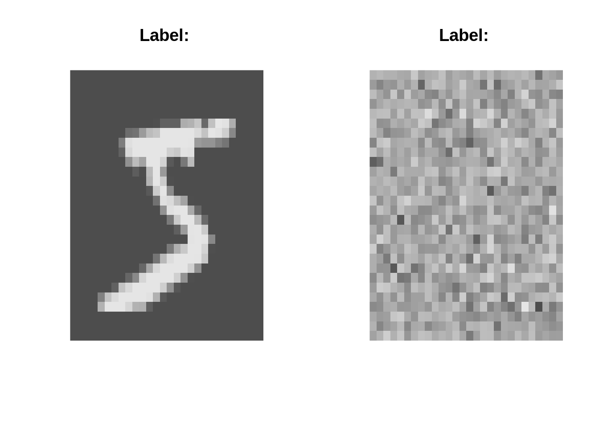
Fit the autoencoder (inputs == outputs!!)
autoencoder %>%
fit(x = train_x, y = train_x, epochs = 5L, batch_size = 128L)Visualization of the latent variables
pred_dim = down_size_model(test_x)
reconstr_pred = up_size_model(pred_dim)
imgPlot(array(reconstr_pred[10,]$numpy(), dim = c(28L, 28L)))par(mfrow = c(1,1))
plot(pred_dim$numpy()[,1], pred_dim$numpy()[,2], col = test[[2]]+1L)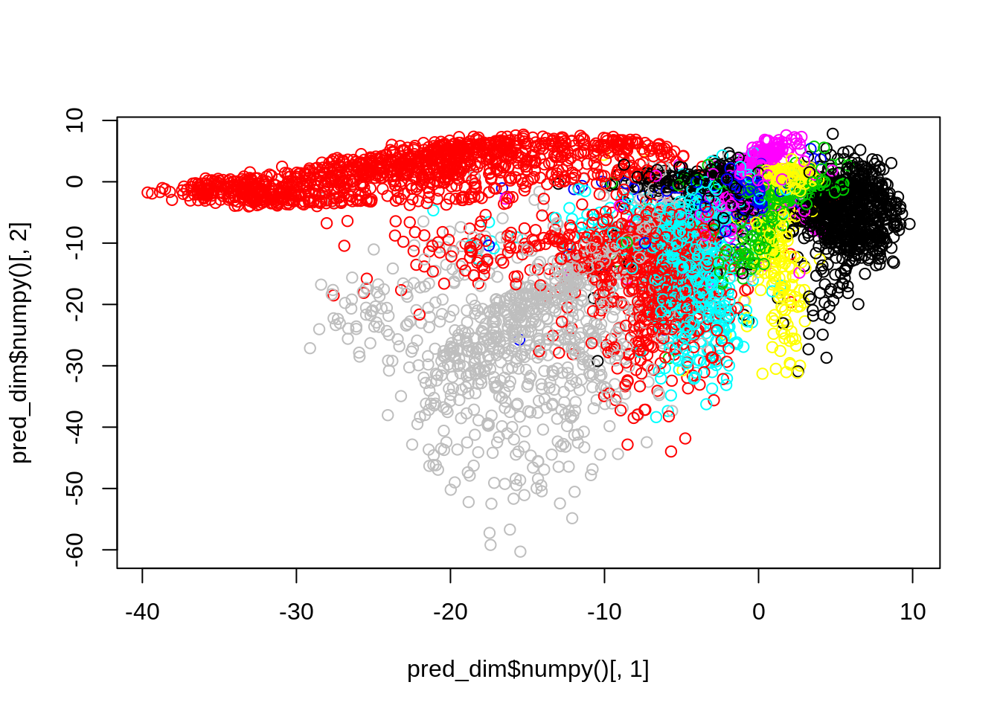
6.1.2 Autoencoder - MNIST CNN
We can also use CNNs isntead of DNNs. There is also an inverse convolutional layer:
Prepare data:
data = tf$keras$datasets$mnist$load_data()
train = data[[1]]
train_x = array(train[[1]]/255, c(dim(train[[1]]), 1L))
test_x = array(data[[2]][[1]]/255, c(dim(data[[2]][[1]]/255), 1L))Then defining the downsize model
down_size_model = keras_model_sequential()
down_size_model %>%
layer_conv_2d(filters = 32L, activation = "relu", kernel_size = c(2L,2L),
input_shape = c(28L, 28L, 1L), strides = c(4L, 4L)) %>%
layer_conv_2d(filters = 16L, activation = "relu",
kernel_size = c(7L,7L), strides = c(1L, 1L)) %>%
layer_flatten() %>%
layer_dense(units = 2L, activation = "linear")Define the upsize model
up_size_model = keras_model_sequential()
up_size_model %>%
layer_dense(units = 8L, activation = "relu", input_shape = c(2L)) %>%
layer_reshape(target_shape = c(1L, 1L, 8L)) %>%
layer_conv_2d_transpose(filters = 16L, kernel_size = c(7,7), activation = "relu", strides = c(1L,1L)) %>%
layer_conv_2d_transpose(filters = 32L, activation = "relu", kernel_size = c(2,2), strides = c(4L,4L)) %>%
layer_conv_2d(filters = 1, kernel_size = c(1L, 1L), strides = c(1L, 1L), activation = "sigmoid")Combine the two models and fit it
autoencoder = tf$keras$models$Model(inputs = down_size_model$input, outputs = up_size_model(down_size_model$output))
autoencoder$compile(loss = loss_binary_crossentropy, optimizer = optimizer_rmsprop(0.001))
autoencoder$fit(x = tf$constant(train_x), y = tf$constant(train_x), epochs = 10L, batch_size = 128L)## <tensorflow.python.keras.callbacks.History>Test it
pred_dim = down_size_model(tf$constant(test_x, "float32"))
reconstr_pred = autoencoder(tf$constant(test_x, "float32"))
imgPlot(reconstr_pred[10,,,]$numpy()[,,1])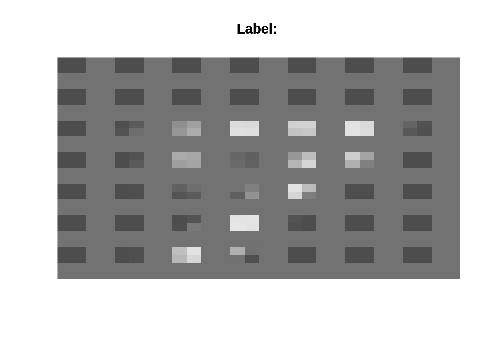
plot(pred_dim[,1]$numpy(), pred_dim[,2]$numpy(), col = test[[2]]+1L)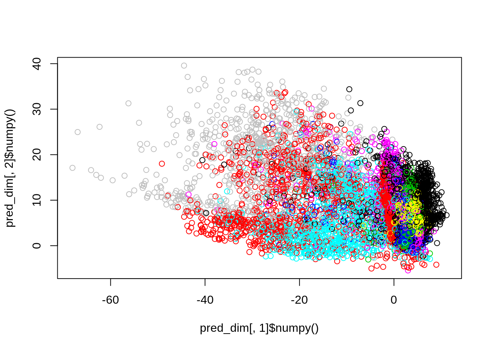
## Generate new images!
new = matrix(c(10,10), 1, 2)
imgPlot(array(up_size_model(new)$numpy(), c(28L, 28L)))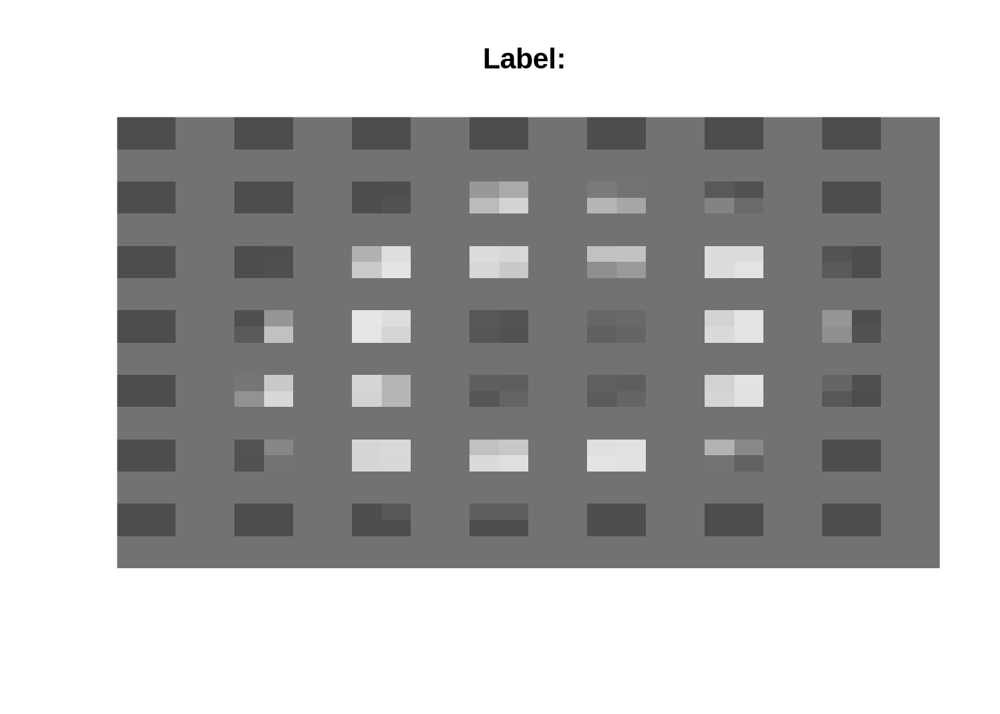
6.1.3 Varational Autoencoder
The difference between a variational and a normal autoencoder is that a variational autoencoder assumes a distribution for the latent variables.
To do so we will use tensorflow probability, but first need to split the data again
# install.packages("tfprobability")
library(tfprobability)
data = tf$keras$datasets$mnist$load_data()
train = data[[1]]
train_x = array(train[[1]]/255, c(dim(train[[1]]), 1L))We will use tensorflow probability to define priors for our latent variables
library(tfprobability)
tfp = reticulate::import("tensorflow_probability")Build the two networks:
encoded = 2L
prior = tfp$distributions$Independent(tfp$distributions$Normal(tf$zeros(2L),1.0),1L)
prior = tfd_independent(tfd_normal(c(0.0, 0.0), 1.0), 1L)
down_size_model = keras_model_sequential()
down_size_model %>%
layer_conv_2d(filters = 32L, activation = "relu", kernel_size = c(2L,2L),
input_shape = c(28L, 28L, 1L), strides = c(4L, 4L)) %>%
layer_conv_2d(filters = 16L, activation = "relu",
kernel_size = c(7L,7L), strides = c(1L, 1L)) %>%
layer_flatten() %>%
layer_dense(units = 4L, activation = "linear") %>%
tfprobability::layer_independent_normal(2L, activity_regularizer = tfp$layers$KLDivergenceRegularizer(distribution_b = prior))
up_size_model = keras_model_sequential()
up_size_model %>%
layer_dense(units = 8L, activation = "relu", input_shape = c(2L)) %>%
layer_reshape(target_shape = c(1L, 1L, 8L)) %>%
layer_conv_2d_transpose(filters = 16L, kernel_size = c(7,7), activation = "relu", strides = c(1L,1L),use_bias = FALSE) %>%
layer_conv_2d_transpose(filters = 32L, activation = "relu", kernel_size = c(2,2), strides = c(4L,4L),use_bias = FALSE) %>%
layer_conv_2d(filters = 1, kernel_size = c(1L, 1L), strides = c(1L, 1L), activation = "sigmoid",use_bias = FALSE)
VAE = keras_model(inputs = down_size_model$inputs,
outputs = up_size_model(down_size_model$outputs))Compile and fit Model:
loss_binary = function(true, pred) {loss_binary_crossentropy(true, pred)*28.0*28.0}
VAE$compile(loss = loss_binary, optimizer = optimizer_adamax())
VAE$fit(train_x, train_x, epochs = 5L)## <tensorflow.python.keras.callbacks.History>And show that it works
dist = down_size_model(train_x[1:2000,,,,drop=FALSE])
images = up_size_model( dist$sample()[1:5,] )
par(mfrow = c(1,1))
imgPlot(images[1,,,1]$numpy())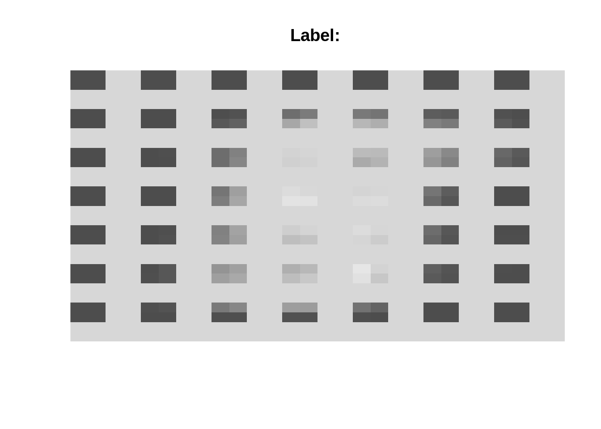
plot(dist$mean()$numpy()[,1], dist$mean()$numpy()[,2], col = train[[2]]+1L)Solution for flower VAE exercise
split the data
data = EcoData::dataset_flower()
test = data$test/255
train = data$train/255
train = abind::abind(list(train, test), along = 1L)Build the VAE:
encoded = 10L
prior = tfp$distributions$Independent(tfp$distributions$Normal(loc=tf$zeros(encoded), scale=1.),
reinterpreted_batch_ndims=1L)
down_size_model = tf$keras$models$Sequential(list(
tf$keras$layers$InputLayer(input_shape = c(80L, 80L, 3L)),
tf$keras$layers$Conv2D(filters = 32L, activation = tf$nn$leaky_relu, kernel_size = 5L, strides =1L),
tf$keras$layers$Conv2D(filters = 32L, activation = tf$nn$leaky_relu, kernel_size = 5L, strides =2L),
tf$keras$layers$Conv2D(filters = 64L, activation = tf$nn$leaky_relu, kernel_size = 5L, strides =1L),
tf$keras$layers$Conv2D(filters = 64L, activation = tf$nn$leaky_relu, kernel_size = 5L, strides =2L),
tf$keras$layers$Conv2D(filters = 128L, activation = tf$nn$leaky_relu, kernel_size = 7L, strides =1L),
tf$keras$layers$Flatten(),
tf$keras$layers$Dense(units = tfp$layers$MultivariateNormalTriL$params_size(encoded), activation = NULL),
tfp$layers$MultivariateNormalTriL(encoded, activity_regularizer = tfp$layers$KLDivergenceRegularizer(prior, weight = 0.0002))
))
up_size_model = tf$keras$models$Sequential(list(
tf$keras$layers$InputLayer(input_shape = encoded),
tf$keras$layers$Dense(units = 8192L, activation = "relu"),
tf$keras$layers$Reshape(target_shape = c(8L, 8L, 128L)),
tf$keras$layers$Conv2DTranspose(filters = 128L, kernel_size = 7L, activation = tf$nn$leaky_relu, strides = 1L,use_bias = FALSE),
tf$keras$layers$Conv2DTranspose(filters = 64L, kernel_size = 5L, activation = tf$nn$leaky_relu, strides = 2L,use_bias = FALSE),
tf$keras$layers$Conv2DTranspose(filters = 64L, kernel_size = 5L, activation = tf$nn$leaky_relu, strides = 1L,use_bias = FALSE),
tf$keras$layers$Conv2DTranspose(filters = 32L, kernel_size = 5L, activation = tf$nn$leaky_relu, strides = 2L,use_bias = FALSE),
tf$keras$layers$Conv2DTranspose(filters = 32L, kernel_size = 5L, activation = tf$nn$leaky_relu, strides = 1L,use_bias = FALSE),
tf$keras$layers$Conv2DTranspose(filters = 3L, kernel_size = c(4L,4L), activation = "sigmoid", strides = c(1L, 1L),use_bias = FALSE)
))
VAE = tf$keras$models$Model(inputs = down_size_model$inputs,
outputs = up_size_model(down_size_model$outputs))
summary(VAE)## Model: "model_3"
## ___________________________________________________________________________________________________________________________________________________________________________
## Layer (type) Output Shape Param #
## ===========================================================================================================================================================================
## input_1 (InputLayer) [(None, 80, 80, 3)] 0
## ___________________________________________________________________________________________________________________________________________________________________________
## conv2d_8 (Conv2D) (None, 76, 76, 32) 2432
## ___________________________________________________________________________________________________________________________________________________________________________
## conv2d_9 (Conv2D) (None, 36, 36, 32) 25632
## ___________________________________________________________________________________________________________________________________________________________________________
## conv2d_10 (Conv2D) (None, 32, 32, 64) 51264
## ___________________________________________________________________________________________________________________________________________________________________________
## conv2d_11 (Conv2D) (None, 14, 14, 64) 102464
## ___________________________________________________________________________________________________________________________________________________________________________
## conv2d_12 (Conv2D) (None, 8, 8, 128) 401536
## ___________________________________________________________________________________________________________________________________________________________________________
## flatten_3 (Flatten) (None, 8192) 0
## ___________________________________________________________________________________________________________________________________________________________________________
## dense_42 (Dense) (None, 65) 532545
## ___________________________________________________________________________________________________________________________________________________________________________
## multivariate_normal_tri_l (MultivariateNormalTriL) multiple 0
## ___________________________________________________________________________________________________________________________________________________________________________
## sequential_17 (Sequential) (None, 80, 80, 3) 1278464
## ===========================================================================================================================================================================
## Total params: 2,394,337
## Trainable params: 2,394,337
## Non-trainable params: 0
## ___________________________________________________________________________________________________________________________________________________________________________be = function(true, pred) tf$losses$binary_crossentropy(true, pred)*80.0*80.0
VAE$compile(loss = be, optimizer = tf$keras$optimizers$Adamax(learning_rate = 0.0003))
VAE$fit(x = train, y = train, epochs = 50L, shuffle = TRUE, batch_size = 20L)## <tensorflow.python.keras.callbacks.History>dist = down_size_model(train[1:10,,,])
images = up_size_model( dist$sample()[1:5,] )
par(mfrow = c(3, 1), mar = rep(1,4))
scales::rescale(images[1,,,]$numpy(), to = c(0, 255)) %>%
image_to_array() %>%
`/`(., 255) %>%
as.raster() %>%
plot()
scales::rescale(images[2,,,]$numpy(), to = c(0, 255)) %>%
image_to_array() %>%
`/`(., 255) %>%
as.raster() %>%
plot()
scales::rescale(images[3,,,]$numpy(), to = c(0, 255)) %>%
image_to_array() %>%
`/`(., 255) %>%
as.raster() %>%
plot()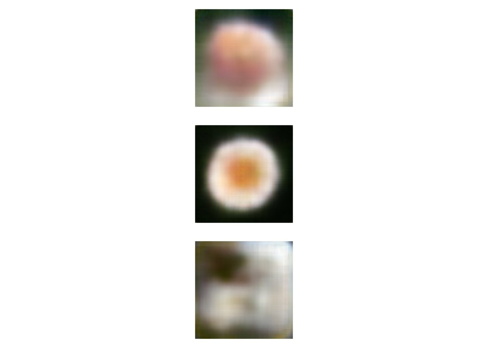
par(mfrow = c(1,1))6.2 Generative adversarial network (GANs)
The idea of generative adversarial network (GAN) is that two neural networks contest with each other in a game. One network is creating data and is trying to “trick” the other network into thinking that the generated data is real. The generator (similar to the decoder in AEs) creates new images from noise. The discriminator is getting a mix of true (from the dataset) and artificially generated images from the generator. Thereby, the loss of the generator rises when fakes are identified as fakes by the discriminator (simple binary_crossentropy loss, 0/1…) and the loss of the discriminator rises when fakes are identified as fakes (class 1) and true images as true images (class 0), again a simple binary crossentropy.
A possible application is to create pictures that look like real photographs (e.g. ). However, the application of GANs today is much wider than just the creation of data. For example, GANs can also be used to “augment” data, i.e. to create new data and thereby improve the fitted model.
6.2.1 MNIST - GAN based on DNNs
We will now explore this on the MNIST data set.
library(keras)
library(tensorflow)
rotate = function(x) t(apply(x, 2, rev))
imgPlot = function(img, title = ""){
col=grey.colors(255)
image(rotate(img), col = col, xlab = "", ylab = "", axes=FALSE, main = paste0("Label: ", as.character(title)))
}We don’t need the test set
data = dataset_mnist()
train = data$train
train_x = array((train$x-127.5)/127.5, c(dim(train$x)[1], 784L))We also need a function to sample images for the discriminator.
batch_size = 32L
dataset = tf$data$Dataset$from_tensor_slices(tf$constant(train_x, "float32"))
dataset$batch(batch_size)## <BatchDataset shapes: (None, 784), types: tf.float32>Define generator model:
get_generator = function(){
generator = keras_model_sequential()
generator %>%
layer_dense(units = 200L ,input_shape = c(100L)) %>%
layer_activation_leaky_relu() %>%
layer_dense(units = 200L) %>%
layer_activation_leaky_relu() %>%
layer_dense(units = 784L, activation = "tanh")
return(generator)
}And we also test the generator model:
generator = get_generator()
sample = tf$random$normal(c(1L, 100L))
imgPlot(array(generator(sample)$numpy(), c(28L, 28L)))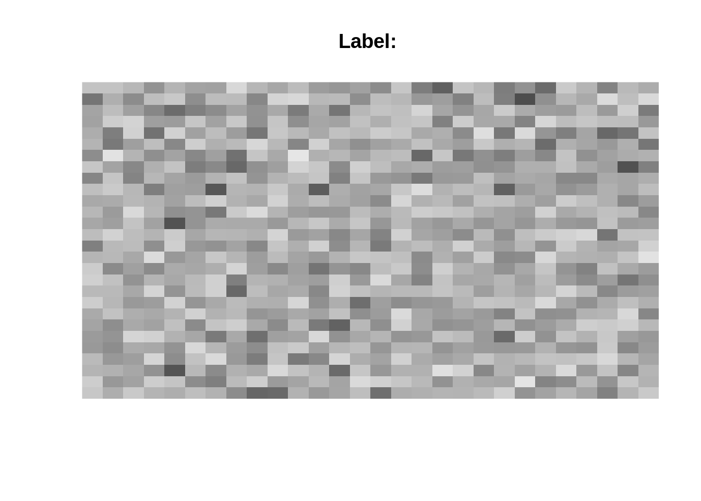
In the discriminator noise (random vector with 100 values) is passed through the network such that the output correspond to the number of pixels of one MNIST image (784). We therefore now define the discriminator function
get_discriminator = function(){
discriminator = keras_model_sequential()
discriminator %>%
layer_dense(units = 200L, input_shape = c(784L)) %>%
layer_activation_leaky_relu() %>%
layer_dense(units = 100L) %>%
layer_activation_leaky_relu() %>%
layer_dense(units = 1L, activation = "sigmoid")
return(discriminator)
}And also test the discriminator function
discriminator = get_discriminator()
discriminator(generator(tf$random$normal(c(1L, 100L))))## tf.Tensor([[0.48516542]], shape=(1, 1), dtype=float32)The normal architecture of a binary classifier (will get images as input)
We also have to define the loss functions for both networks, the binary crossentropy. However, we have to encode the true and predicted values for the two networks individually.
The discriminator will get two losses - one for identifying fake images as fake, and one for identifying real MNIST images as real images.
The generator will just get one loss - was it able to deceive the discriminator?
ce = tf$keras$losses$BinaryCrossentropy(from_logits = TRUE)
loss_discriminator = function(real, fake){
real_loss = ce(tf$ones_like(real), real)
fake_loss = ce(tf$zeros_like(fake), fake)
return(real_loss+fake_loss)
}
loss_generator = function(fake){
return(ce(tf$ones_like(fake), fake))
}Each network will get its own optimizer (in a GAN the networks are treated independently)
gen_opt = tf$keras$optimizers$RMSprop(1e-4)
disc_opt = tf$keras$optimizers$RMSprop(1e-4)We have to write here our own training loop (we cannot use the fit function). In each iteration (for each batch) we will do the following (the GradientTape records computations to do automatic differenation):
- sample noise
- Generator creates images from the noise
- Discriminator will make predictions for fake images and real images (response is a probability between [0,1])
- Calculate loss for generator
- Calculate loss for discriminator
- Calculate gradients for weights and the loss
- Update weights of generator
- Update weights of discriminator
- return losses
generator = get_generator()
discriminator = get_discriminator()
train_step = function(images){
noise = tf$random$normal(c(128L, 100L))
with(tf$GradientTape(persistent = TRUE) %as% tape,{
gen_images = generator(noise)
fake_output = discriminator(gen_images)
real_output = discriminator(images)
gen_loss = loss_generator(fake_output)
disc_loss = loss_discriminator(real_output, fake_output)
})
gen_grads = tape$gradient(gen_loss, generator$weights)
disc_grads = tape$gradient(disc_loss, discriminator$weights)
rm(tape)
gen_opt$apply_gradients(purrr::transpose(list(gen_grads, generator$weights)))
disc_opt$apply_gradients(purrr::transpose(list(disc_grads, discriminator$weights)))
return(c(gen_loss, disc_loss))
}
train_step = tf$`function`(reticulate::py_func(train_step))Now we can finally train our networks in a traings loop:
- Create networks
- get batch of images
- run train_step function
- print losses
- repeat step 2-4 for number of epochs
batch_size = 128L
epochs = 20L
steps = as.integer(nrow(train_x)/batch_size)
counter = 1
gen_loss = c()
disc_loss = c()
dataset2 = dataset
dataset2 = dataset2$prefetch(tf$data$AUTOTUNE)
for(e in 1:epochs) {
dat = reticulate::as_iterator(dataset2$batch(batch_size))
coro::loop(for (images in dat) {
losses = train_step(images)
gen_loss = c(gen_loss, tf$reduce_sum(losses[[1]])$numpy())
disc_loss = c(disc_loss, tf$reduce_sum(losses[[2]])$numpy())
})
if(epochs %% 5 == 0) cat("Gen: ", mean(gen_loss), " Disc: ", mean(disc_loss), " \n")
noise = tf$random$normal(c(1L, 100L))
if(epochs %% 10 == 0) imgPlot(array(generator(noise)$numpy(), c(28L, 28L)), "Gen")
}## Gen: 0.698665 Disc: 1.045619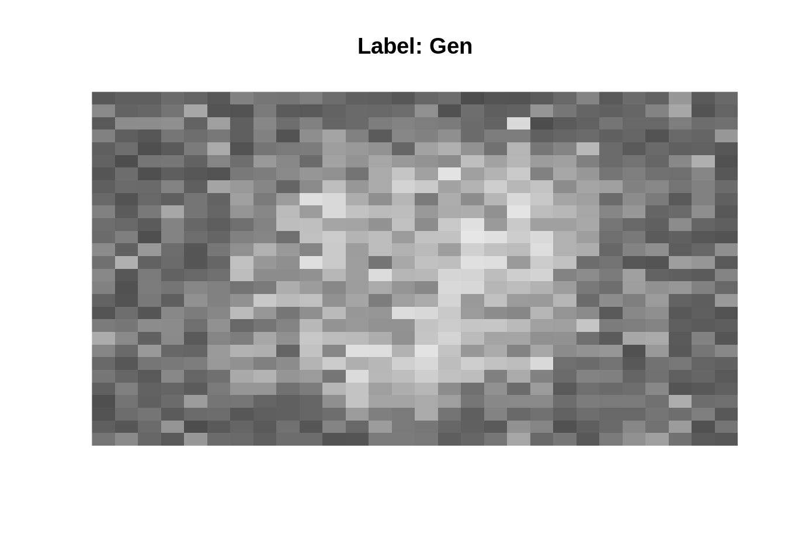
## Gen: 0.7292857 Disc: 1.171398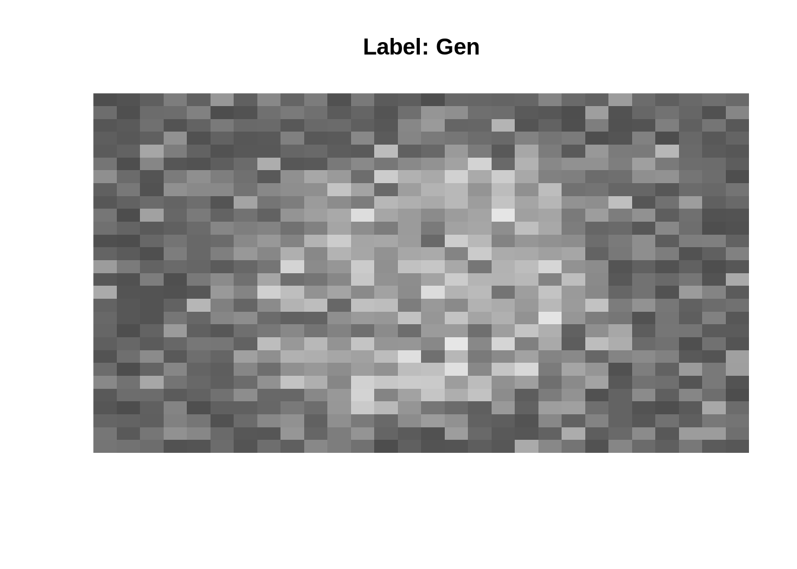
## Gen: 0.735557 Disc: 1.178947## Gen: 0.7608144 Disc: 1.164342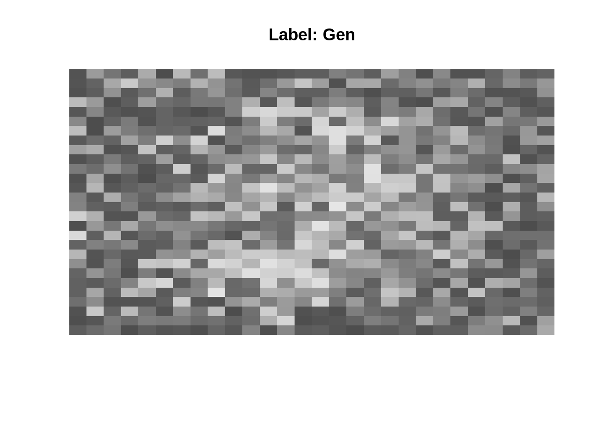
## Gen: 0.7838787 Disc: 1.162516## Gen: 0.8100629 Disc: 1.138622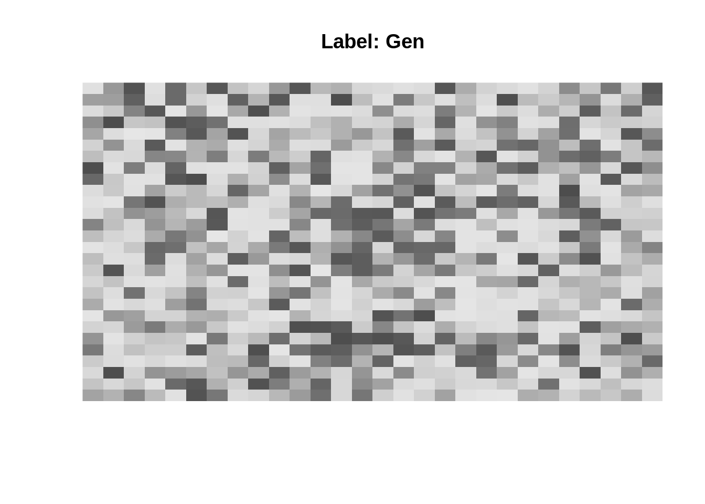
## Gen: 0.8346533 Disc: 1.129616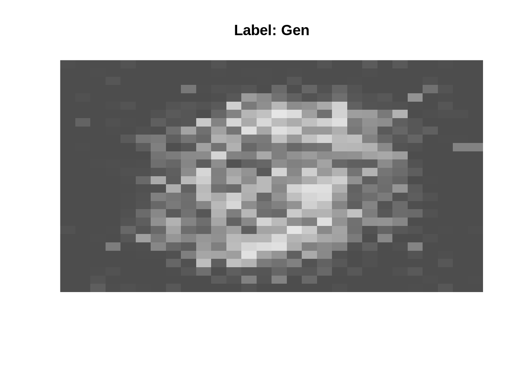
## Gen: 0.8370759 Disc: 1.206893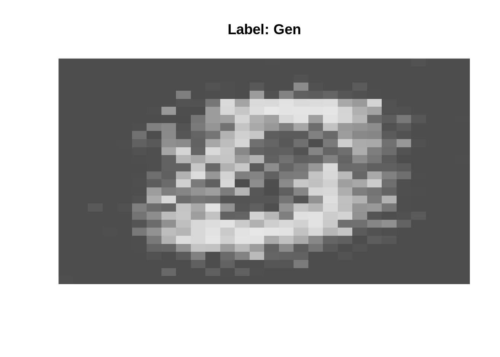
## Gen: 0.839834 Disc: 1.255028## Gen: 0.8449456 Disc: 1.284072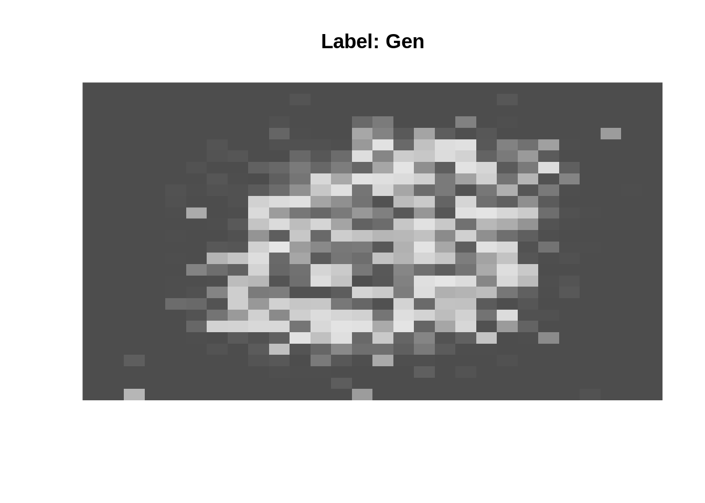
## Gen: 0.8497524 Disc: 1.303134
## Gen: 0.8542513 Disc: 1.3171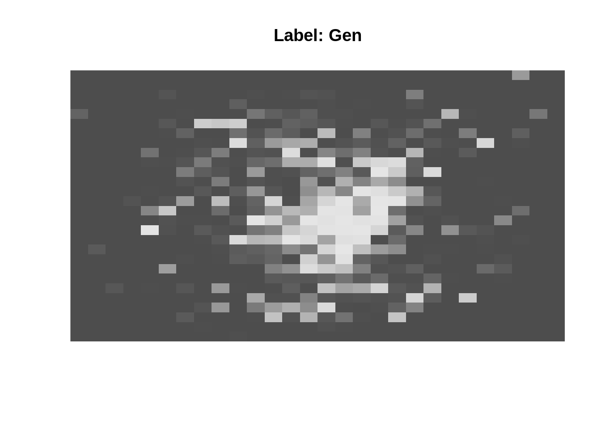
## Gen: 0.8580322 Disc: 1.324953## Gen: 0.8620668 Disc: 1.329731## Gen: 0.8674336 Disc: 1.33044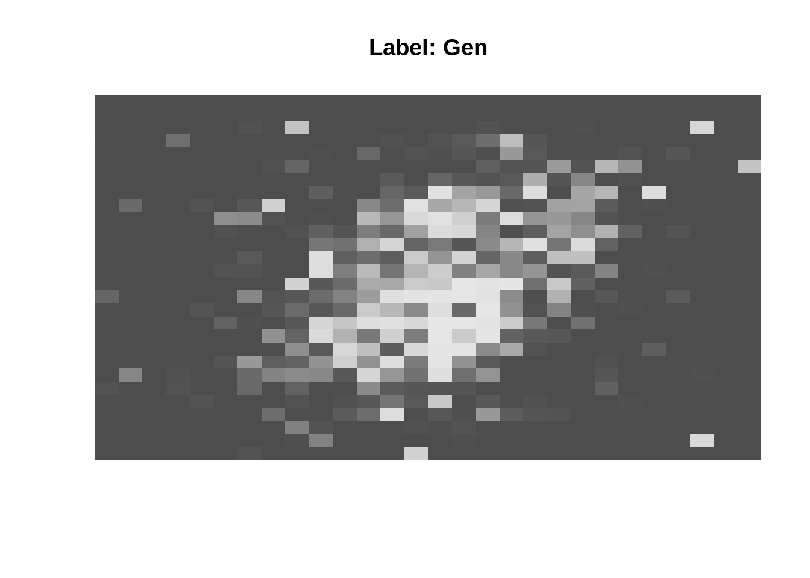
## Gen: 0.8759508 Disc: 1.328094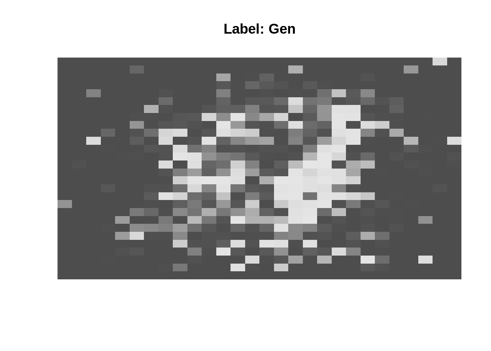
## Gen: 0.8848731 Disc: 1.326496## Gen: 0.9032159 Disc: 1.307091## Gen: 0.8882738 Disc: 1.403191## Gen: 0.8861885 Disc: 1.42346.2.2 Flower - GAN
We can now also do the same for the flower dataset, we will write this now completely in our own following the steps also done for the MNIST data set.
library(keras)
library(tidyverse)
library(tensorflow)
library(EcoData)
data = EcoData::dataset_flower()
train = (data$train-127.5)/127.5
test = (data$test-127.5)/127.5
train_x = abind::abind(list(train, test), along = 1L)
dataset = tf$data$Dataset$from_tensor_slices(tf$constant(train_x, "float32"))Define the generator models and test it
get_generator = function(){
generator = keras_model_sequential()
generator %>%
layer_dense(units = 20L*20L*128L, input_shape = c(100L), use_bias = FALSE) %>%
layer_activation_leaky_relu() %>%
layer_reshape(c(20L, 20L, 128L)) %>%
layer_dropout(0.3) %>%
layer_conv_2d_transpose(filters = 256L, kernel_size = c(3L, 3L), padding = "same", strides = c(1L, 1L), use_bias = FALSE) %>%
layer_activation_leaky_relu() %>%
layer_dropout(0.3) %>%
layer_conv_2d_transpose(filters = 128L, kernel_size = c(5L, 5L), padding = "same", strides = c(1L, 1L), use_bias = FALSE) %>%
layer_activation_leaky_relu() %>%
layer_dropout(0.3) %>%
layer_conv_2d_transpose(filters = 64L, kernel_size = c(5L, 5L), padding = "same", strides = c(2L, 2L), use_bias = FALSE) %>%
layer_activation_leaky_relu() %>%
layer_dropout(0.3) %>%
layer_conv_2d_transpose(filters =3L, kernel_size = c(5L, 5L), padding = "same", strides = c(2L, 2L), activation = "tanh", use_bias = FALSE)
return(generator)
}
generator = get_generator()
image = generator(tf$random$normal(c(1L,100L)))$numpy()[1,,,]
image = scales::rescale(image, to = c(0, 255))
image %>%
image_to_array() %>%
`/`(., 255) %>%
as.raster() %>%
plot()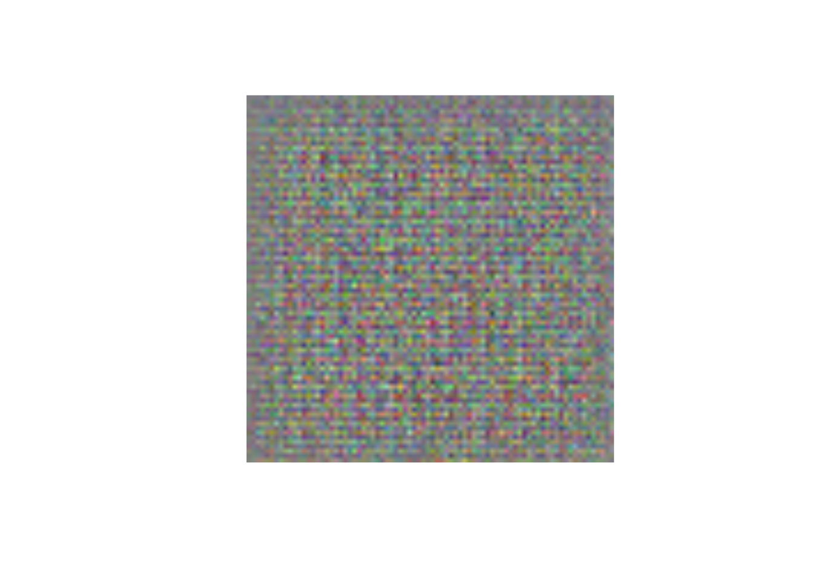
Define the discriminator and test it
get_discriminator = function(){
discriminator = keras_model_sequential()
discriminator %>%
layer_conv_2d(filters = 64L, kernel_size = c(5L, 5L), strides = c(2L, 2L), padding = "same", input_shape = c(80L, 80L, 3L)) %>%
layer_activation_leaky_relu() %>%
layer_dropout(0.3) %>%
layer_conv_2d(filters = 128L, kernel_size = c(5L, 5L), strides = c(2L, 2L), padding = "same") %>%
layer_activation_leaky_relu() %>%
layer_dropout(0.3) %>%
layer_conv_2d(filters = 256L, kernel_size = c(3L, 3L), strides = c(2L, 2L), padding = "same") %>%
layer_activation_leaky_relu() %>%
layer_dropout(0.3) %>%
layer_flatten() %>%
layer_dense(units = 1L, activation = "sigmoid")
return(discriminator)
}
discriminator = get_discriminator()
discriminator## Model
## Model: "sequential_23"
## ________________________________________________________________________________________________________________________________________________________________________
## Layer (type) Output Shape Param #
## ========================================================================================================================================================================
## conv2d_13 (Conv2D) (None, 40, 40, 64) 4864
## ________________________________________________________________________________________________________________________________________________________________________
## leaky_re_lu_12 (LeakyReLU) (None, 40, 40, 64) 0
## ________________________________________________________________________________________________________________________________________________________________________
## dropout_8 (Dropout) (None, 40, 40, 64) 0
## ________________________________________________________________________________________________________________________________________________________________________
## conv2d_14 (Conv2D) (None, 20, 20, 128) 204928
## ________________________________________________________________________________________________________________________________________________________________________
## leaky_re_lu_13 (LeakyReLU) (None, 20, 20, 128) 0
## ________________________________________________________________________________________________________________________________________________________________________
## dropout_9 (Dropout) (None, 20, 20, 128) 0
## ________________________________________________________________________________________________________________________________________________________________________
## conv2d_15 (Conv2D) (None, 10, 10, 256) 295168
## ________________________________________________________________________________________________________________________________________________________________________
## leaky_re_lu_14 (LeakyReLU) (None, 10, 10, 256) 0
## ________________________________________________________________________________________________________________________________________________________________________
## dropout_10 (Dropout) (None, 10, 10, 256) 0
## ________________________________________________________________________________________________________________________________________________________________________
## flatten_4 (Flatten) (None, 25600) 0
## ________________________________________________________________________________________________________________________________________________________________________
## dense_57 (Dense) (None, 1) 25601
## ========================================================================================================================================================================
## Total params: 530,561
## Trainable params: 530,561
## Non-trainable params: 0
## ________________________________________________________________________________________________________________________________________________________________________discriminator(generator(tf$random$normal(c(1L, 100L))))## tf.Tensor([[0.4999479]], shape=(1, 1), dtype=float32)Defin the loss functions
ce = tf$keras$losses$BinaryCrossentropy(from_logits = TRUE,label_smoothing = 0.1)
loss_discriminator = function(real, fake){
real_loss = ce(tf$ones_like(real), real)
fake_loss = ce(tf$zeros_like(fake), fake)
return(real_loss+fake_loss)
}
loss_generator = function(fake){
return(ce(tf$ones_like(fake), fake))
}Define the optimizers and the batch function
gen_opt = tf$keras$optimizers$RMSprop(1e-4)
disc_opt = tf$keras$optimizers$RMSprop(1e-4)Define functions for the generator and discriminator
generator = get_generator()
discriminator = get_discriminator()
train_step = function(images){
noise = tf$random$normal(c(32L, 100L))
with(tf$GradientTape(persistent = TRUE) %as% tape,{
gen_images = generator(noise)
real_output = discriminator(images)
fake_output = discriminator(gen_images)
gen_loss = loss_generator(fake_output)
disc_loss = loss_discriminator(real_output, fake_output)
})
gen_grads = tape$gradient(gen_loss, generator$weights)
disc_grads = tape$gradient(disc_loss, discriminator$weights)
rm(tape)
gen_opt$apply_gradients(purrr::transpose(list(gen_grads, generator$weights)))
disc_opt$apply_gradients(purrr::transpose(list(disc_grads, discriminator$weights)))
return(c(gen_loss, disc_loss))
}
train_step = tf$`function`(reticulate::py_func(train_step))and do the training
batch_size = 32L
epochs = 30L
steps = as.integer(dim(train_x)[1]/batch_size)
counter = 1
gen_loss = c()
disc_loss = c()
dataset = dataset$prefetch(tf$data$AUTOTUNE)
for(e in 1:epochs) {
dat = reticulate::as_iterator(dataset$batch(batch_size))
coro::loop(for (images in dat) {
losses = train_step(images)
gen_loss = c(gen_loss, tf$reduce_sum(losses[[1]])$numpy())
disc_loss = c(disc_loss, tf$reduce_sum(losses[[2]])$numpy())
})
noise = tf$random$normal(c(1L, 100L))
image = generator(noise)$numpy()[1,,,]
image = scales::rescale(image, to = c(0, 255))
if(e %% 10 == 0) {
image %>%
image_to_array() %>%
`/`(., 255) %>%
as.raster() %>%
plot()
}
cat("Gen: ", mean(gen_loss), " Disc: ", mean(disc_loss), " \n")
}## Gen: 1.306508 Disc: 0.7499311
## Gen: 1.642531 Disc: 0.7524724
## Gen: 1.758082 Disc: 0.7557405
## Gen: 1.775723 Disc: 0.7922062
## Gen: 1.829759 Disc: 0.8016865
## Gen: 1.844751 Disc: 0.8076763
## Gen: 1.851428 Disc: 0.8200128
## Gen: 1.778948 Disc: 0.8471291
## Gen: 1.700364 Disc: 0.868916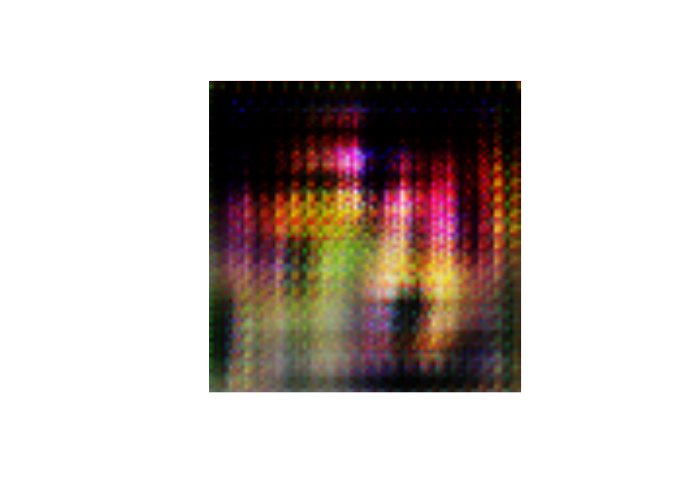
## Gen: 1.638747 Disc: 0.8920114
## Gen: 1.584972 Disc: 0.9129172
## Gen: 1.539596 Disc: 0.9322909
## Gen: 1.498774 Disc: 0.9490943
## Gen: 1.468858 Disc: 0.9578662
## Gen: 1.436318 Disc: 0.9738313
## Gen: 1.407347 Disc: 0.9875392
## Gen: 1.37928 Disc: 1.001608
## Gen: 1.351953 Disc: 1.015016
## Gen: 1.32872 Disc: 1.025609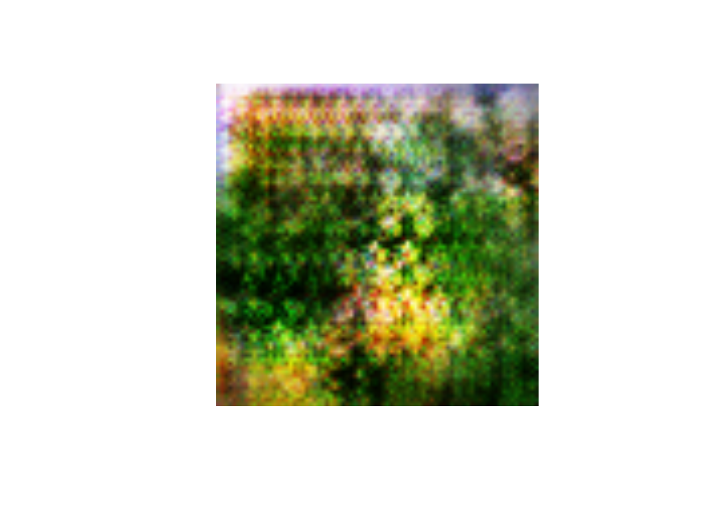
## Gen: 1.307389 Disc: 1.035098
## Gen: 1.28867 Disc: 1.043913
## Gen: 1.271431 Disc: 1.052562
## Gen: 1.25563 Disc: 1.06001
## Gen: 1.240075 Disc: 1.068241
## Gen: 1.226204 Disc: 1.074457
## Gen: 1.214902 Disc: 1.078508
## Gen: 1.206106 Disc: 1.081272
## Gen: 1.198109 Disc: 1.08372
## Gen: 1.191049 Disc: 1.086597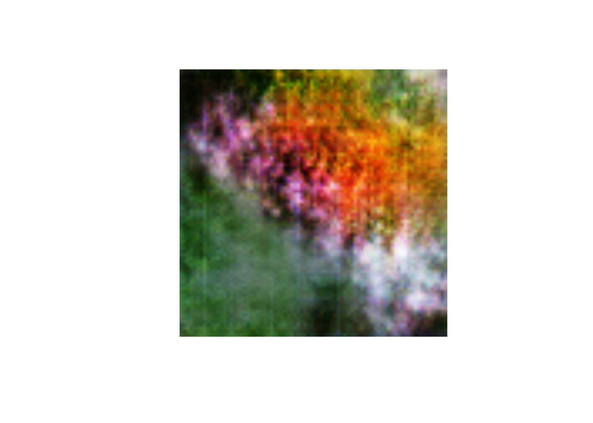
## Gen: 1.184345 Disc: 1.088539 noise = tf$random$normal(c(1L, 100L))
image = generator(noise)$numpy()[1,,,]
image = scales::rescale(image, to = c(0, 255))
image %>%
image_to_array() %>%
`/`(., 255) %>%
as.raster() %>%
plot()More images:


6.3 Reinforcement learning
Objective: train a neural network capable of balancing a pole
The environment is run on a local server, please install:
Or go through this colab book
library(keras)
library(tensorflow)
library(gym)
remote_base <- "http://127.0.0.1:5000"
client <- create_GymClient(remote_base)
env = gym::env_create(client, "CartPole-v1")
gym::env_list_all(client)
env_reset(client, env)
#action = env_action_space_sample(client, env)
step = env_step(client, env, 1)
env_reset(client, env)
goal_steps = 500
score_requirement = 60
intial_games = 1000
state_size = 4L
action_size = 2L
gamma = 0.95
epsilon = 0.95
epsilon_min = 0.01
epsilon_decay = 0.995
model = keras_model_sequential()
model %>%
layer_dense(input_shape = c(4L), units = 20L, activation = "relu") %>%
layer_dense(units = 20L, activation = "relu") %>%
layer_dense(2L, activation = "linear")
model %>%
compile(loss = loss_mean_squared_error, optimizer = optimizer_adamax())
memory = matrix(0, nrow = 8000L, 11L)
counter = 1
remember = function(memory, state, action, reward, next_state, done){
memory[counter,] = as.numeric(c(state, action, reward, next_state, done))
counter <<- counter+1
return(memory)
}
# memory: state 1:4, action 5, reward 6, next_state 7:10, done 11
act = function(state){
if(runif(1) <= epsilon) return(sample(0:1, 1)) #
act_prob = predict(model, matrix(state,nrow = 1L))
return(which.max(act_prob) -1L)
}
replay = function(batch_size = 25L, memory, counter){
indices = sample.int(counter, batch_size)
batch = memory[indices,,drop = FALSE]
for(i in 1:nrow(batch)){
target = batch[i,6] #reward
action = batch[i,5] #action
state = matrix(memory[i, 1:4], nrow = 1L)
next_state = matrix(memory[i,7:10], nrow =1L)
if(!batch[i,11]){ # not done
target = (batch[i,6] + gamma* predict(model, matrix(next_state, nrow = 1L)))[1,1]
}
target_f = predict(model, matrix(state, nrow = 1L))
target_f[action+1L] = target
model$fit(x = state, y = target_f, epochs = 1L, verbose = 0L)
if(epsilon > epsilon_min){
epsilon <<- epsilon_decay*epsilon
}
}
}
done = 0
for(e in 1:100){
state = unlist(env_reset(client, env))
for(time in 1:500){
action = act(state)
response = env_step(client, env, action = action)
done = as.integer(response$done)
if(!done) reward = response$reward
else reward = -10
next_state = unlist(response$observation)
memory = remember(memory, state, action, reward, next_state, done)
state = next_state
if(done){
cat("episode", e/500, " score: ", time, " eps: ", epsilon, "\n")
break()
}
if(counter > 32L)
replay(32L, memory, counter-1L)
}
}